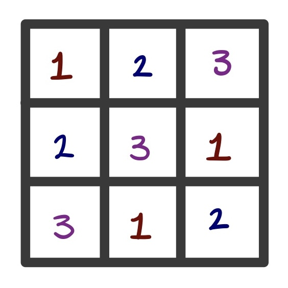
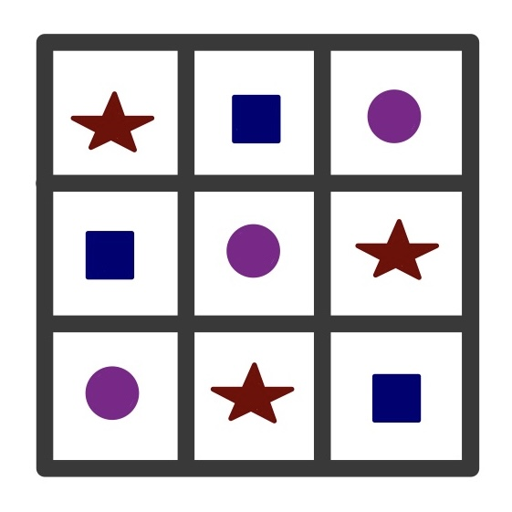
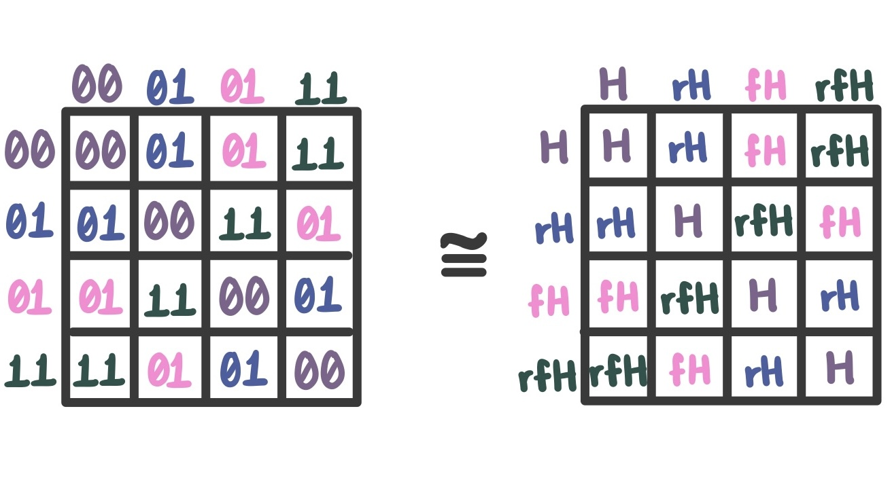
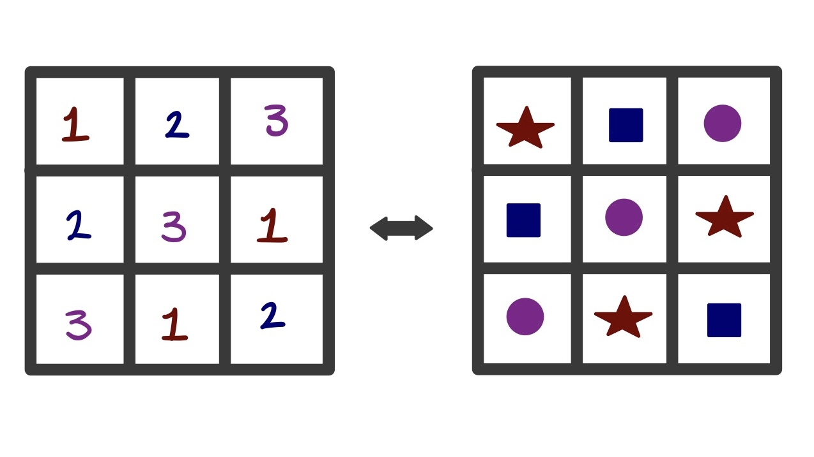
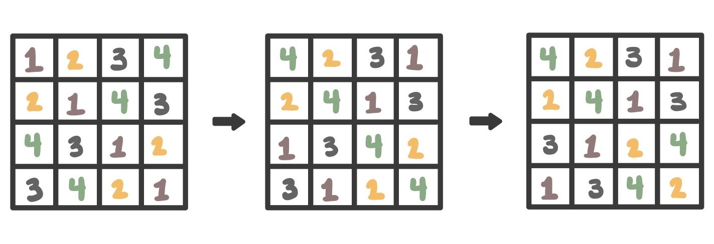

When Are Latin Squares the Same?
You're probably thinking right now, "What the heck is a Latin square?" and also, "How could they be the same?"
What Are Latin Squares?
Well, to answer your first thought, a Latin square is an n x n grid where every element/symbol in it appears exactly once in each row and column. Need a visual? I got you!

Here's another visual if that wasn't enough for you!

The Basics
Now that we can put a face to the name, let's talk about some basic key properties that Latin squares hold.
Uniqueness: By definition, the uniqueness of an element in every row and column prevents repetition in a given row and column.
Order: The order of a Latin square is given by its size n.
Permutation Structure: Every row and column is a permutation of the element/symbol set.
Algebraic Characterization: Latin squares are viewed as a multiplication table of a structure called a quasigroup.
These basic properties are just that, the bare bones of what makes a Latin square. More properties can be added depending on the type of Latin square we are looking at, but that's a conversation for another time. Let's focus on the last property that was listed: Algebraic Characterization.
Looking back at the property, what might we mean by a multiplication table? Well, there's another word(s) for it that we're more familiar with that may help us. Remember Cayley tables from our abstract algebra class? Yes? Perfect! Let's replace the word multiplication with Cayley, then: Latin squares are viewed as a Cayley table of a structure called a quasigroup. As a matter of fact, Cayley tables of any group can be viewed as a Latin square! Keep in mind, however, the converse is not true, as not every Latin square comes from a group. So while every group gives us a Latin square, not every Latin square gives us a group.
Isomorphism in Latin Squares
By now you're probably thinking, "Okay, cool, but I still don't know when two Latin squares are the same." Well, good news for you because we're about to dive right into it.
Let's think about the Cayley tables of finite groups. Recall that in group theory, specifically in our abstract algebra class, two Cayley tables are the same if their groups are isomorphic to each other. As a refresher, to be isomorphic means there's a bijection that preserves the operation exactly. Here's an example of two groups being isomorphic to each other:

In Figure 3, we can see that the two groups are different in the sense that one has numerical elements and the other has alphabetical elements. Even though that is the case, the structure of the groups is the same despite having different elements. This change is a simple relabeling of the elements and can only be done to groups isomorphic to each other.
Given that Cayley tables are Latin squares, any Latin square can be relabeled to look like another. Here's an example of this:

As seen in Figure 4, even though the Latin squares superficially look different, their underlying structure remains the same. In a group theory setting, we can say that the two Latin squares are isomorphic as well; however, we know that Latin squares aren't only relevant in groups. So to use group isomorphism to refer to two Latin squares being the same would be a disservice.
Latin squares are more flexible than groups as they encode only the pattern of a multiplication table. This means that a simple relabeling of the elements or symbols isn't all that can be done to show that two Latin squares share the same underlying structure. With this flexible notion of equivalence in mind, we see that other transformations are possible, such as permuting rows, columns, and (relabeling) independent elements or symbols without changing the essential structure of the square. These additional possibilities lead us to a broader idea of equivalence in Latin squares: isotopy.
Isotopy
What exactly is isotopy? Isotopy is an equivalence relation used to classify algebraic structures, such as quasigroups and loops. Isotopy allows the following three independent transformations:
- permutation of the rows
- permutation of the columns
- permutation of the elements or symbols
Together, these permutations give us what's called isotopism. By applying the permutations one after the other on one Latin square to produce another, then the two squares are said to be isotopic. Note: All three transformations don't need to be applied for two squares to be isotopic; applying just one can be enough.
Here's a visual:

Looking at Figure 5, we can see the transformations of permuting the elements (square one to square two) and permuting the rows (square two to square three). After these transformations, it's visually obvious that square one and square three look different, but still, the pattern is the same. Thus, we can say these Latin squares are isotopic!
Thus, two Latin squares are considered the same (up to isotopy) when they are isotopic.
Why Isotopy Matters
Great, your two thoughts have been answered! But I bet another thought has come up during this last section, "Okay, so Latin squares are the same when they are isotopic, but is that all there is to isotophism?" Not exactly. Isotopy is actually pretty useful in the realm of mathematics, and we'll briefly go over some reasons why.
-
Isotopy is more flexible than isomorphism. To get a bit more in depth, by now we can conclude that every isomorphism is an isotopy as an isomorphism is a special case where the row, column, and element (or symbol) permutations are the same. We can also conclude that every isotopy isn't an isomorphism, hence it captures structural similarities that relabeling isn't able to.
-
Isotopy respects the algebraic behavior of quasigroups by preserving their multiplication pattern without forcing group-level constraints like associative or identity elements.
-
Isotopy makes classification organization possible as it groups structures into isotopy classes. These classes are ideal for Latin squares as the number of Latin squares n grows exponentially; thus, grouping them in isotopy classes makes it feasible for research.
-
Isotopy preserves important structural properties, as many algebraic properties are isotopy-invariant properties. This means that it holds for all isotopes of a given structure. For example, associativity & being abelian are isotopy-invariant, hence if a loop is associative, all its isotopes are associative.
-
Isotopy connects algebra and combinatorics by linking the world of combinatorics through Latin squares with the world of algebra through quasigroups and loops. This gives mathematicians a unified way to study both.
What Have We Learned?
After all the definitions, examples, and permutations, we now see that Latin squares can be tricky. As two squares (of the same order) may look different at first glance, with a bit of permutations and/or relabeling, we realize they hold the same pattern.
We also saw that isomorphism is just the strict version of isotopy, with both relating to when two Latin squares are the same in their respective senses. The flexibility of isotopy is why Latin squares (and the quasigroups behind them) are naturally compared by it. Overall, Latin squares don't just look like multiplication tables; they behave like them, and with isotopy as a tool, we are able to see the structure underneath them.